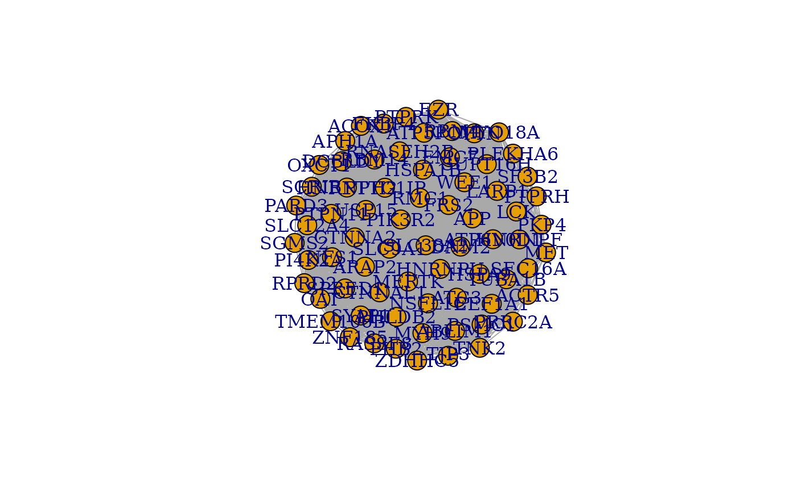

Make Correlation Network
MakeCorrelationNetwork.RdMake Correlation Network filters a correlation matrix of PTMs by specific PTMs. It groups the PTM correlation matrix based on the Genes of PTMs. By summing these submatrices, it also produces a gene by gene cocluster correlation network shows strength of relationships between proteins using the common clusters between the three distance metrics.
Usage
MakeCorrelationNetwork(
common.clusters,
ptm.correlation.matrix,
ptm.cccn.name = "ptm.cccn",
gene.cccn.name = "gene.cccn"
)Arguments
- common.clusters
A list of clusters. Ideally the ones found by MakeClusterList in common_clusters
- ptm.correlation.matrix
A data frame showing the correlation between ptms (as the rows and the columns). NAs are placed along the diagonal.
- ptm.cccn.name
Desired name of the PTM correlation matrix filtered by specific PTMs from input
- gene.cccn.name
Desired name for the cocluster correlation network; defaults to gene.cccn
Value
The list of common clusters between all three distance metrics (Euclidean, Spearman, and SED) and a matrix showing strength of relationships between proteins using the common clusters between the three distance metrics (Euclidean, Spearman, and Combined (SED))
Examples
ex.ptm.cor <- ex.ptm.correlation.matrix
MakeCorrelationNetwork(ex.common.clusters, ex.ptm.cor, "ex.ptm.cccn", "ex.gene.cccn")

ex.ptm.cccn[1:5, 1:5]
#> ABLIM1 p Y357 ABLIM1 p Y373 MET p Y1003 PKP4 p Y1156
#> ABLIM1 p Y357 NA 0.8857143 0.8186275 0.8846154
#> ABLIM1 p Y373 0.8857143 NA 0.8637363 0.8637363
#> MET p Y1003 0.8186275 0.8637363 NA 0.6835165
#> PKP4 p Y1156 0.8846154 0.8637363 0.6835165 NA
#> ABLIM1 p Y383 0.6428571 0.8000000 0.9000000 0.3000000
#> ABLIM1 p Y383
#> ABLIM1 p Y357 0.6428571
#> ABLIM1 p Y373 0.8000000
#> MET p Y1003 0.9000000
#> PKP4 p Y1156 0.3000000
#> ABLIM1 p Y383 NA
ex.gene.cccn[1:5, 1:5]
#> ABLIM1 MET PKP4 MYH9 SEC16A
#> ABLIM1 NA 44.48902 82.79735 36.05673 21.02892
#> MET 44.48902 NA 110.88877 66.78124 24.29454
#> PKP4 82.79735 110.88877 NA 221.19493 77.65545
#> MYH9 36.05673 66.78124 221.19493 NA 22.81430
#> SEC16A 21.02892 24.29454 77.65545 22.81430 NA